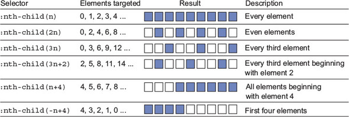

Los selectores apuntan a elementos específicos de la página para aplicarles estilo. CSS proporciona una amplia gama de tipos de selectores.
A.1. Selectores básicos
tagname- Selector de tipo o selector de etiqueta. Este selector coincide con el nombre de etiqueta de los elementos a los que apuntar. Tiene una especificidad de 0,0,1. Ejemplosp:; h1; strong..class- Selector de clases. Se dirige a elementos que tienen el nombre de clase especificado como parte de su atributo de clase. Tiene una especificidad de 0,1,0. Ejemplos:.media; .nav-menu.#id- Selector de ID. Apunta al elemento con el atributo de ID especificado. Tiene una especificidad de 1,0,0. Ejemplo:#sidebar.*- Selector universal. Apunta a todos los elementos. Tiene una especificidad de 0,0,0.
A.2. Combinadores
Los combinadores unen múltiples selectores simples en un selector complejo. En el selector .nav-menu li, por ejemplo, el espacio entre los dos selectores simples se conoce como combinador descendiente. Indica que el objetivo <li> es descendiente de un elemento que tiene la nav-menuclase. Este es el combinador más común, pero hay algunos otros, cada uno de los cuales indica una relación particular entre los elementos indicados:
- Combinador hijo
( >): se dirige a elementos que son descendientes directos de otro elemento. Ejemplo:.parent > .child. - Combinador de hermanos adyacentes
( +): apunta a elementos que siguen inmediatamente a otro. Ejemplo:p + h2. - Combinador general de hermanos
( ~): apunta a todos los elementos hermanos que siguen a un elemento especificado. Tenga en cuenta que esto no se dirige a los hermanos que aparecen antes del elemento indicado. Ejemplo:li.active ~ li.
Selectores compuestos
Se pueden unir varios selectores simples (sin espacios ni otros combinadores) para formar un selector compuesto (por ejemplo, h1.page-header). Un selector compuesto apunta a elementos que coinciden con todos sus selectores simples. Por ejemplo, .dropdown.is-active apunta a <div class="dropdown is-active"> pero no <div class="dropdown">.
A.3. Selectores de pseudoclase
Los selectores de pseudoclases se utilizan para apuntar a elementos cuando se encuentran en un estado determinado. Este estado puede deberse a la interacción del usuario o la posición del elemento en relación con sus elementos principales o hermanos en el documento. Los selectores de pseudoclase siempre comienzan con dos puntos (:). Estos tienen la misma especificidad que un selector de clases (0,1,0).
:first-child: Se dirige a los elementos que son el primer elemento dentro de su elemento principal.:last-child: Se dirige a los elementos que son el último elemento dentro de su elemento principal.:only-child: Se dirige a los elementos que son el único elemento dentro de su elemento principal (sin hermanos).:nth-child(an+b)- Se enfoca en elementos basados en su posición entre sus hermanos. La fórmula , donde y son números enteros, indica a qué elementos apuntar. Para saber exactamente cómo funciona una fórmula, imagínese resolviéndola para todos los valores enteros de , comenzando con cero. Los resultados de esta ecuación indican a qué niños se dirige. Esta figura ilustra algunos ejemplos:an+babn:nth-last-child(an+b)- Similar a:nth-child(), pero en lugar de contar hacia adelante desde el primer elemento, este selector cuenta hacia atrás desde el último elemento. La fórmula entre paréntesis sigue el mismo patrón que en:nth-child().:first-of-type- De naturaleza similar a:first-child, excepto que en lugar de considerar la posición entre todos los hijos, considera la posición numérica de un elemento solo entre otros hijos con el mismo nombre de etiqueta.:last-of-type: Se dirige al último elemento hijo de cada tipo.:only-of-type: Se dirige a elementos que son el único hijo de su tipo.:nth-of-type(an+b)- Se dirige a elementos de su tipo en función de su orden numérico y la fórmula especificada; similar a:nth-child.:nth-last-of-type(an+b)- Se dirige a elementos de su tipo basándose en una fórmula específica, contando desde el último de esos elementos hacia atrás; similar a:nth-last-child.:not(<selector>): Se dirige a elementos que no coinciden con el selector entre paréntesis. El selector dentro del paréntesis debe ser simple: solo puede hacer referencia al elemento en sí; no puede utilizar este selector para excluir antepasados. Tampoco debe contener otro selector de negación.:empty- Se dirige a elementos que no tienen hijos. Tenga en cuenta que esto no apunta a un elemento que contiene espacios en blanco, ya que el espacio en blanco se representa en el DOM como un nodo de texto secundario. En el momento de escribir este artículo, el W3C está considerando una pseudoclase:blankque se comporta de manera similar pero que también selecciona elementos que contienen solo espacios en blanco;:blankaún no es compatible con ningún navegador.:focus: Se dirige a elementos que han recibido el foco, ya sea mediante un clic del mouse, un toque en la pantalla o la navegación con la tecla Tab.:hover: Apunta a elementos mientras el cursor del ratón se desplaza sobre ellos.:root: Se dirige al elemento raíz del documento. En HTML, este es el elemento<html>. Pero CSS se puede aplicar a otros documentos XML o similares a XML, como SVG; en cuyo caso, este selector funciona de forma más genérica.
Varias otras pseudoclases se relacionan con los campos de formulario. Algunos de estos se introdujeron o perfeccionaron con la especificación de nivel 4 de selectores, por lo que no funcionan en IE10 y algunos otros navegadores. Compruebe caniuse.com de apoyo.
:disabled: Se dirige a elementos deshabilitados, incluidas entradas, selecciones y botones.:enabled: Apunta a elementos habilitados, lo que significa que pueden activarse o aceptar el foco.:checked: Se dirige a las casillas de verificación seleccionadas, los botones de opción o las opciones de las casillas de selección.:invalid: Se dirige a elementos con valores de entrada no válidos, según lo definido por el tipo de entrada. Por ejemplo, an<input type="email">, cuyo valor no es una dirección de correo electrónico válida. (Nivel 4).:valid- Se dirige a elementos con valores válidos (nivel 4).:required- Se dirige a elementos con un requiredconjunto de atributos (nivel 4).:optional- Se dirige a elementos que no tienen un requiredconjunto de atributos (Nivel 4).
Esta lista de pseudoclases no es exhaustiva. Consulte la documentación de MDN en https://developer.mozilla.org/en-US/docs/Web/CSS/Pseudo-classes para obtener una lista completa.
A.4. Selectores de pseudoelementos
Los pseudo-elementos son similares a las pseudo-clases, pero en lugar de seleccionar elementos con un estado especial, se dirigen a una determinada parte del documento que no corresponde directamente a un elemento particular en el HTML. Pueden apuntar solo a partes de un elemento o incluso inyectar contenido en la página donde el marcado no define ninguno.
Estos selectores comienzan con dos puntos (::), aunque la mayoría de los navegadores también admiten una sintaxis de dos puntos por razones de compatibilidad con versiones anteriores. Los pseudoelementos tienen la misma especificidad que un selector de tipo (0,0,1).
::before: Crea un pseudoelemento que se convierte en el primer elemento secundario del elemento coincidente. Este elemento está integrado de forma predeterminada. Puede usarse para insertar texto, imágenes u otras formas. La propiedadcontentdebe especificarse para que aparezca este elemento. Ejemplo:.menu::before.::after: Crea un pseudoelemento que se convierte en el último hijo del elemento coincidente. Este elemento está integrado de forma predeterminada. Puede usarse para insertar texto, imágenes u otras formas. La contentpropiedad debe especificarse para que aparezca este elemento. Ejemplo:.menu::after.::first-letter: Permite especificar estilos solo para el primer carácter de texto dentro del elemento coincidente. Ejemplo:h2::first-letter.::first-line: Permite especificar estilos para la primera línea de texto dentro del elemento coincidente.::selection: Permite especificar estilos para cualquier texto que el usuario haya resaltado con el cursor. Esto se usa a menudo para cambiar elbackground-colortexto seleccionado. Solo se pueden utilizar unas pocas propiedades; entre ellos se incluyen el color, el color de fondo, el cursor y la decoración del texto.
A.5. Selectores de atributos
Los selectores de atributos se pueden utilizar para apuntar a elementos en función de sus atributos HTML. Estos tienen la misma especificidad que un selector de clases (0,1,0).
[attr]: Se dirige a elementos que tienen el atributo especificadoattr, independientemente de su valor. Ejemplo:input[disabled].[attr="value"]: Se dirige a elementos que tienen el atributo especificadoattry su valor coincide con el valor de cadena especificado. Ejemplo:input[type="radio"].[attr^="value"]- Selector de atributos “Empieza por”. Objetivos por atributo y valor, donde el valor comienza con el valor de cadena especificado. Ejemplo:a[href^= "https"].[attr$="value"]- Selector de atributos "Termina con". Objetivos por atributo y valor, donde el valor termina con el valor de cadena especificado. Ejemplo:a[href$= ".pdf"].[attr*="value"]- Selector de atributos “Contiene”. Objetivos por atributo y valor, donde el valor del atributo contiene el valor de cadena especificado. Ejemplo:[class*="sprite-"].[attr~="value"]- Selector de atributos “Lista separada por espacios”. Objetivos por atributo y valor, donde el valor del atributo es una lista de valores separados por espacios, uno de los cuales coincide con el valor de cadena especificado. Ejemplo:a[rel="author"].[attr|="value"]: Objetivos por atributo y valor, donde el valor coincide con la cadena especificada valueo comienza con ella y va seguida inmediatamente de un guión(-). Útil para el atributo de idioma, que puede o no especificar un subcódigo de idioma (por ejemplo, español mexicanoes-MX, o español en general es). Ejemplo:[lang|="es"].
Selectores de atributos que no distinguen entre mayúsculas y minúsculas
Todos los selectores de atributos anteriores distinguen entre mayúsculas y minúsculas. La especificación de selectores de nivel 4 introduce un modificador que no distingue entre mayúsculas y minúsculas que se puede agregar a cualquier selector de atributo. Para hacer esto, agregue un iantes del corchete de cierre. Ejemplo: input[value="search" i].
Muchos navegadores aún no lo admiten. Aquellos que no lo hagan, lo ignorarán. Por esta razón, si usa modificadores que no distinguen entre mayúsculas y minúsculas, asegúrese de agregar una alternativa a una versión normal que distinga entre mayúsculas y minúsculas.